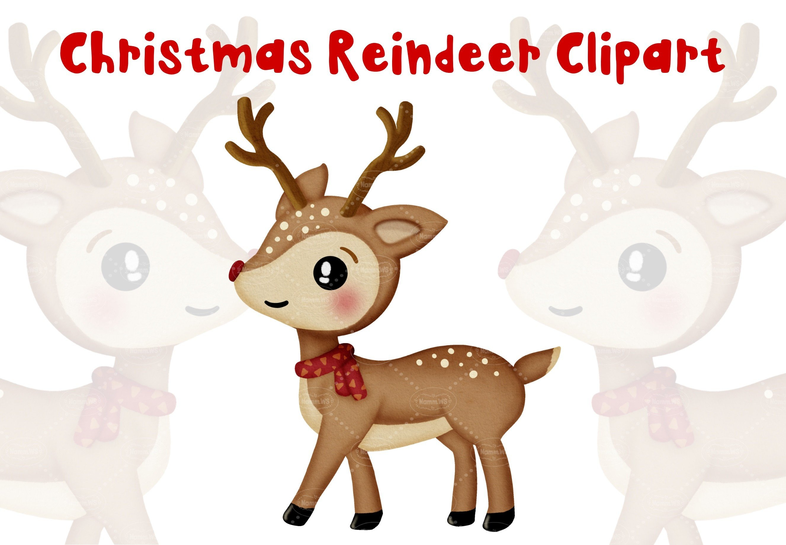

Den Weihnachtshit um das rotnasige Rentier, das den Schlitten des Weihnachtsmanns sicher durch die Lüfte leitet, kennt wohl jedes Kind.
Wusstest du aber auch, dass männliche Rentiere zur Weihnachtszeit gar kein Geweih mehr haben? Das werfen sie nämlich nach der Brunft im Herbst ab.
Streng genommen handelt es sich bei Santas Rentierherde also ausschließlich um Weibchen.
Rudolphine wäre doch auch ein schöner Name, oder?
